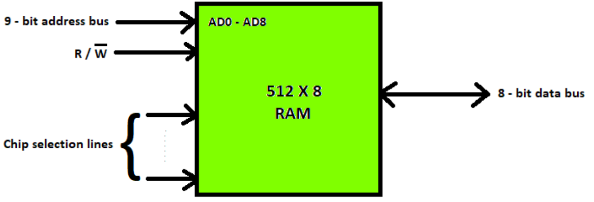

存储器
Introduction to memory
Memory devices are digital system that store data either temporarily or for a long term. Digital computers to hard disk have built in memory devices that can store data of user or manufacturers. The data either be in the form of control programs or programs that boot the system.
存储设备是一种临时或长期存储数据的数字系统。数字计算机到硬盘都内置了存储设备，可以存储用户或制造商的数据。这些数据要么以控制程序的形式出现，要么以引导系统的程序出现。
The challenge is to build memory devices that have large capacity but cost effective. The memory devices must be capable of storing both permanent data and instantaneous data.
我们面临的挑战是制造出容量大但性价比高的存储设备。存储设备必须能够存储永久数据和瞬时数据。
Memories are made up of registers. Each register in the memory is one storage location. The storage location is also called a memory location. Memory locations are identified using Address. The total number of bits a memory can store is its capacity.
存储器是由寄存器组成的。内存中的每个寄存器都是一个存储位置。存储位置也称为内存位置。内存位置使用地址标识。一个存储器可以存储的总比特数就是它的容量。
A storage element is called a Cell. Each register is made up of a storage element in which one bit of data is stored. The data in a memory are stored and retrieved by the process called writing and reading respectively.
存储单元称为Cell。每个寄存器由一个存储单元组成，其中存储一位数据。内存中的数据分别通过写入和读取过程进行存储和检索。

A word is a group of bits where a memory unit stores binary information. A word with a group of 8 bits is called a byte.
字是存储单元存储二进制信息的一组位。一个由8位组成的字称为一个字节。
A memory unit consists of data lines, address selection lines, and control lines that specify the direction of transfer.
存储器单元由数据线、地址选择线和指定传输方向的控制线组成。
Data lines provide the information to be stored in memory. The control inputs specify the direct transfer. The k-address lines specify the word chosen. When there are \( k \) address lines, \( 2^k \) memory words can be accessed.
数据线提供要存储在内存中的信息。控制输入指定直接转移。k-address行指定所选的字。当有 \( k \) 个地址行时，可以访问 \( 2^k \) 个内存字。
Memory Hierarchy
Characteristics of Memory Hierarchy: Capacity, Access Time, Performance, Cost per bit.
内存层次结构的特征:容量、访问时间、性能、位价比。
In the Computer System Design, Memory Hierarchy is an enhancement to organize the memory such that it can minimize the access time. The Memory Hierarchy was developed based on a program behavior known as locality of references.
在计算机系统设计中，存储器层次结构是对存储器组织的一种改进，以使访问时间最小化。内存层次结构是基于称为引用局部性的程序行为开发的。
This memory hierarchy is divided into 2 main types:
这种内存层次结构分为两种主要类型:
External Memory or Secondary Memory - Comprising of Magnetic Disk, Optical Disk, Magnetic Tape i.e. peripheral storage devices which are accessible by the processor via I/O Module.
外部存储器或辅助存储器-包括磁盘、光盘、磁带，即由处理器通过I/O模块访问的外围存储设备。
Internal Memory or Primary Memory - Comprising of Main Memory, Cache Memory and CPU registers which are directly accessible by thed processor.
内部存储器或主存储器-包括主存储器，高速缓存存储器和CPU寄存器，可由处理器直接访问。
Types of computer memory
Computer memory is of two basic types - Primary memory(RAM and ROM) and Secondary memory (hard drive, CD, etc). Random Access Memory (RAM) is primary-volatile memory and Read-Only Memory (ROM) is primary-non-volatile memory.
计算机存储器有两种基本类型——主存储器(RAM和ROM)和辅助存储器(硬盘驱动器、CD等)。RAM (Random Access Memory)是主易失性存储器，ROM (Read-Only Memory)是主非易失性存储器。
Random Access Memory (RAM)
随机访问存储器
It is also called read-write memory or the main memory or the primary memory.
它也被称为读写存储器或主存储器或主存储器。
The programs and data that the CPU requires during the execution of a program are stored in this memory.
CPU在执行程序时需要的程序和数据都存储在这个内存中。
It is a volatile memory as the data is lost when the power is turned off.
它是一种易失性存储器，当电源关闭时数据丢失。
RAM is further classified into two types- SRAM (Static Random Access Memory) and DRAM (Dynamic Random Access Memory).
RAM进一步分为两种类型- SRAM(静态随机存储器)和DRAM(动态随机存储器)。
Read-Only Memory (ROM)
只读访问存储器
Stores crucial information essential to operate the system, like the program essential to boot the computer.It is non-volatile.
它是一种非易失性存储器，存储操作系统所必需的关键信息，如启动计算机所必需的程序。
Used in embedded systems or where the programming needs no change. Used in calculators and peripheral devices.
用于嵌入式系统或无需更改编程的地方。用于计算器和外围设备。
ROM is further classified into four types- MROM, PROM, EPROM, and EEPROM.
ROM又分为MROM、PROM、EPROM和EEPROM四种类型。
Different Types of RAM
RAM is used to Read and Write data into it which is accessed by CPU randomly. RAM is used to store the data that is currently processed by the CPU. Most of the programs and data that are modifiable are stored in RAM.
RAM用于对CPU随机访问的数据进行读写。RAM用于存储当前由CPU处理的数据。大多数可修改的程序和数据都存储在RAM中。
SRAM
The SRAM memories consist of circuits capable of retaining the stored information as long as the power is applied. That means this type of memory requires constant power. SRAM memories are used to build Cache Memory.
SRAM存储器由能够保持存储信息的电路组成，只要施加电源。这意味着这种类型的存储器需要恒定的电源。SRAM存储器用于构建高速缓存存储器。
For Read operation, the word line is activated by the address input to the address decoder. The activated word line closes both the transistors (switches) T1 and T2. Then the bit values at points A and B can transmit to their respective bit lines. The read/write circuit at the end of the bit lines sends the output to the processor.
对于读操作，字行由输入到地址解码器的地址激活。激活字线关闭晶体管(开关)T1和T2。然后将A点和B点的位值传输到各自的位线上。位线末端的读/写电路将输出发送给处理器。
For Write operation, the address provided to the decoder activates the word line to close both the switches. Then the bitd value that is to be written into the cell is provided through the read/write circuit and the signals in bit lines are then stored in thed cell.
对于写操作，提供给解码器的地址激活字线以关闭两个开关。然后，通过读/写电路提供要写入单元的位值，然后将位线中的信号存储在单元中。
DRAM
DRAM stores the binary information in the form of electric charges applied to capacitors. The stored information on the capacitors tends to lose over a period of time and thus the capacitors must be periodically recharged to retain their usage. The main memory is generally made up of DRAM chips.
DRAM以施加在电容器上的电荷的形式存储二进制信息。存储在电容器上的信息在一段时间内趋于丢失，因此电容器必须定期充电以保持其使用。主存储器通常由DRAM芯片组成。
Difference between SRAM and DRAM
Addressable Memory
Memory is a storage component in the Computer used to store application programs. The Memory Chip is divided into equal parts called as "CELLS”. Each Cell is uniquely identified by a binary number called as "ADDRESS”.
内存是计算机中用来存储应用程序的存储部件。存储芯片被分成相等的部分，称为“单元”。每个单元由一个称为“地址”的二进制数唯一标识。
2D and 2.5D Memory organization
In 2D organization, memory is divided in the form of rows and columns(Matrix). Each row contains a word, now in this memory organization, there is a decoder. A decoder is a combinational circuit that contains \( n \) input lines and \( 2^n \) output lines. One of the output lines selects the row by the address contained in the MAR and the word which is represented by that row gets selected and is either read or written through the data lines.
在2D组织中，内存以行和列(矩阵)的形式划分。每一行包含一个字，现在在这个内存组织中，有一个解码器。解码器是包含\( n \)条输入线和\( 2^n \)条输出线的组合电路。其中一个输出行根据MAR中包含的地址选择行，然后选择行所表示的字，并通过数据线读取或写入。
In 2.5D Organization the scenario is the same but we have two different decoders one is a column decoder and another is a row decoder. Column decoder is used to select the column and a row decoder is used to select the row. The address from the MAR goes as the decoders' input. Decoders will select the respective celld through the bit outline, then the data from that location will be read or through the bit, inline data will be written at that memory location.
在2.5D组织中，情况是相同的，但我们有两个不同的解码器，一个是列解码器，另一个是行解码器。列解码器用于选择列，行解码器用于选择行。来自MAR的地址作为解码器的输入。解码器将通过位输出线选择相应的单元格，然后从该位置读取数据，或者通过位，将输入线数据写入该内存位置。
CPU Memory Interface
The CPU interacts with memory for two operations i.e READ or WRITE. READ is for getting either instructions or Data (Operands).
CPU与内存交互进行两个操作，即读或写。READ用于获取指令或数据(操作数)。
To access memory, the address of the memory location is required. This address is always loaded in the Memory Address Register (MAR) by the CPU. READ or WRITE operation is always carried out on the location specified by MAR.
要访问内存，需要内存位置的地址。这个地址总是被CPU加载到内存地址寄存器(MAR)中。读或写操作总是在MAR指定的位置执行。
In the case of READ, the memory returns the data to the CPU while in the case of WRITE the data to be written onto the memory location is given by CPU.
在READ的情况下，内存将数据返回给CPU，而在WRITE的情况下，数据写入由CPU给出的内存位置。
The data exchange happens via the Memory Data Register (MDR). The CPU communicates to the memory about the READ or WRITE activity as control signals. Also, some more signals to time the validity of information on the Address bus and Data bus are part of Control Signals.
数据交换通过内存数据寄存器(MDR)进行。CPU将READ或WRITE活动作为控制信号与内存通信。另外，控制信号的一部分还包括地址总线和数据总线上信息有效性的实时信号。
The communication about the address and data and the associated Control signals happen in the bus. A bus is a set of physical connections between two entities used for communication using electrical signals. This external bus has three components namely,(i) Address bus, (ii) Data bus and (iii) Control Signals. Memory Address Register (MAR) and the Memory Data Register (MDR) play an important role in communication. The control signals are generated by the Control Unit.
地址和数据的通信以及相关的控制信号都发生在总线上。总线是两个实体之间的一组物理连接，用于使用电信号进行通信。该外部总线有三个组成部分，即(i)地址总线，(ii)数据总线和(iii)控制信号。内存地址寄存器(MAR)和内存数据寄存器(MDR)在通信中起着重要的作用。控制信号由控制单元产生。
Data transfer rate or bandwidth is one of the measures of the performance of the external bus between CPU and Memory. The maximum amount of information that can be transferred to or from the memory per unit time is the data transfer rate or bandwidth and is measured in bits or words per second.
数据传输速率或带宽是CPU和内存之间外部总线性能的度量之一。单位时间内可以从存储器中传入或传出的最大信息量是数据传输速率或带宽，以每秒比特或字为单位进行测量。
Memory Capacity Integration
内存容量集成
Typical Memory Module Interface
Increasing the word width by a factor.
位扩展：扩展数据线。
Increasing the Number of Words (address) by a Factor.
字扩展：扩展地址线。
When the capacity is expanded to increase the addressable range, the CS' signal plays a role in selecting the correct block. The MSB bit(s) of the address is(are) decoded and connected to each module as CS' enable. In the above figure, a simple inverter (NOT logic) is used on the MSB line as there are only 2 modules. If there are more modules then a decoder is required.
当容量扩大以增加可寻址范围时，CS信号在选择正确的块中起作用。地址的MSB位(s)被解码，并作为片选信号连接到每个模块。在上图中，在MSB线上使用了一个简单的反相器(非逻辑)，因为只有2个模块。如果有更多的模块，那么解码器是必需的。
Example
Design 128M Byte memory using 8M × 8 chips, with 32-bit read/write operations.
采用8M × 8芯片设计128M字节内存，具有32位读写操作。
Number of chips needed: 16.
需要芯片总数16片
Number of chips per set: 4.
每组4块芯片
Number of sets: 4.
需要4组芯片
Practice
利用4K×4位的DRAM芯片设计一个8K×8位的DRAM存储器, R/!W作读写控制,则共需要多少块芯片?芯片容量扩展方式是什么?地址用十六进制表示,起始地址为0000H,则每组存储芯片的地址范围是多少？
第1步：由4K×4构成4K×8（位扩展，需2个芯片）
第2步：由4K×8构成8K×8（字扩展，需2组芯片）
共需要4块芯片，扩展方式：位扩展和字扩展，2组芯片地址范围如下：
第1组：0000H到0FFFH
第2组：1000H到1FFFH
Cache Memory
A faster and smaller segment of memory whose access time is as close as registers are known as Cache memory. In a hierarchy of memory, cache memory has access time lesser than primary memory. Generally, cache memory is very smaller and hence is used as a buffer.
访问时间与寄存器一样接近的更快、更小的内存段称为高速缓存存储器。在内存层次结构中，缓存的访问时间小于主内存。通常，缓存非常小，因此用作缓冲区。
Cache memory is faster, they can be accessed very fast. Cache memory is smaller, a large amount of data cannot be stored.
缓存更快，可以非常快地访问它们。缓存较小，无法存储大量数据。
Cache Memory is a special very high-speed memory. It is used to speed up and synchronizing with high-speed CPU. Cache memory is costlier than main memory or disk memory but economical than CPU registers.
高速缓存存储器是一种特殊的高速存储器。用于与高速CPU进行加速和同步。高速缓存存储器比主存或磁盘内存昂贵，但比CPU寄存器经济。
It holds frequently requested data and instructions so that they are immediately available to the CPU when needed.
它保存频繁请求的数据和指令，以便CPU在需要时立即可用。
Cache memory is used to reduce the average time to access data from the Main memory. The cache is a smaller and faster memory which stores copies of the data from frequently used main memory locations.
高速缓存用于减少从主存储器访问数据的平均时间。缓存是一种更小、更快的存储器，用于存储经常使用的主内存位置的数据副本。
When the CPU initiates READ on a memory location, It is checked and determined whether it is available in the Cache.
当CPU对一个内存位置发起READ操作时，将检查并确定该内存位置在Cache中是否可用。
If available, at the access rate of Cache, the data is returned to CPU. If not available, access is made to main memory. The particular word is supplied to CPU and also written in the Cacheline of the Cache. (This is required keeping in line with the Principle of Locality of Reference)
如果可用，则以Cache的访问速率将数据返回给CPU。如果不可用，则访问主存。特定的字被提供给CPU，也被写入缓存的Cacheline中。(基于局部访问性原理)

Cache performance
缓存性能
On searching in the cache if data is found, a cache hit has occurred. If data is not found, a cache miss has occurred.
在缓存中搜索时，如果找到数据，则表示缓存命中。如果没有找到数据，则发生缓存丢失
$$ \mathrm{Hit~rate=hit~/~(hit~+~miss)=no.~of~hits/total~accesses} $$
$$ \mathrm{Effective~Access~Time}=\mathrm{Hit~rate~*~Cache~access~time}+\mathrm{Miss~rate~*~Lower~level~access~time} $$
System Design with Multilevel Cache Memory.
多级高速缓存系统设计。
Average access Time For Multilevel Cache:(Tavg)
多级缓存的平均访问时间:(Tavg)
$$ \begin{aligned}T_{avg}=H_1\times C_1+(1-H_1)\times(H_2\times C_2+(1-H_2)\times M)\end{aligned} $$
Practice
假设CPU执行某段程序时,共访问Cache 2900次,访问主存100次。已知Cache的存取周期为50ns,主存的存取周期为250ns,则Cache的命中率为多少?平均访问时间为多少?Cache的效率为多少?
\( Hit \ Rate=2900/(2900+100)=96.7\% \)
\( \begin{aligned}T_{avg}=96.7\%\times50+(1-96.7\%)\times250=57.6ns\end{aligned} \)
\( E=50/57.6=86.8\% \)
Cache Mapping
缓存映射
There are three different types of mapping used for the purpose of cache memory which are as follows: Direct mapping, Associative mapping, and Set-Associative mapping.
有三种不同类型的映射用于缓存：直接映射，全相联映射和组相联映射。
Direct Mapping
The simplest technique, known as direct mapping, maps each block of main memory into only one possible cache line. In Direct mapping, the set of memory blocks that correspond to a cache line are decided by a mod factor.
最简单的技术，称为直接映射，将每个主存块映射到一条可能的缓存线。在直接映射中，与缓存行对应的内存块集由取模结果决定。
\( i = j~modulo~m \)
\( where \)
\( i = cache~line~number \)
\( j = main~memory~block~number \)
\( m = number~of~lines~in~the~cache \)
For purposes of cache access, each main memory address can be viewed as consisting of three fields.
为了缓存访问的目的，每个主存地址可以被看作由三个字段组成。

Break up of address to direct mapping
地址分割
Associative Mapping
In Associative Mapping, the associative memory is used to store content and addresses of the memory word. Any block from main memory can be put in any cache line. The presence of a block is searched by reading the content of all the cache lines.
在全相联映射中，关联存储器用于存储字的内容和地址。主存储器中的任何块都可以放在任何高速缓存行中。通过读取所有缓存行的内容来搜索块的存在。

Break up of address to associative mapping
地址分割
Set-Associative Mapping
It is an extension of the direct mapped cache technique by increasing the cache resources. In this case, the cache consists of a number of sets, each of which consists of a number of lines.
组相联映射是直接映射缓存技术的扩展，通过增加缓存资源。在这种情况下，缓存包含许多组，每个组由许多行组成。
\( m = v * k \)
\( i= j~mod~v \)
\( where \)
\( i = cache~set~number \)
\( j = main~memory~block~number \)
\( v = number~of~sets \)
\( m = number~of~lines~in~the~cache \)
\( k = number~of~lines~in~each~set \)
The mapping of blocks is direct-mapped while searching the address within the set in Tag memory is associative therefore a block in memory can map to any one of the lines of a specific set. Set associative cache mapping combines the best of direct and associative cache mapping techniques.
块的映射是直接映射的，而在Tag内存中搜索组内的地址是全相联的，因此内存中的块可以映射到特定集合的任何一行。组相联映射结合了直接和全相联映射技术的优点。
Practice
某主存(Main memory)容量为512K字， Cache容量为4K字，块长为4字，则直接映射的地址格式是什么?全相联映射的地址格式是什么？4路组相联（4块为1组）的地址格式是什么？
若该Cache的初态为空，CPU依次从主存第0, 1, 2...59号单元读出60个字，并重复按此次序读5次,则命中率是多少?
Block Replacement Algorithms
块替换算法
There is a Miss and a data block is to be placed into the cache. But all cache blocks have valid data. Therefore a decision to be taken about the candidate block for replacement.
一旦缓存数据缺失，一个数据块将被放入缓存中。但是所有缓存块都存在有效数据。因此，需要决定对哪个候选块进行替换。常见的替换算法如下：
Random、Least Recently Used (LRU)、First In First Out (FIFO)、Least Frequently Used (LFU)
Virtual Memory
Virtual Memory is a storage allocation scheme in which secondary memory can be addressed as though it were part of the main memory. The addresses a program may use to reference memory are distinguished from the addresses the memory system uses to identify physical storage sites, and program-generated addresses are translated automatically to the corresponding machine addresses.
虚拟内存是一种存储分配方案，在这种方案中，辅助存储器可以作为主内存的一部分来寻址。程序可以引用关联存储器的地址与存储器系统用来标识物理存储器的地址，并且程序生成的地址被自动转换为相应的机器地址。
The size of virtual storage is limited by the addressing scheme of the computer system and the amount of secondary memory is available not by the actual number of the main storage locations.
虚拟存储器的大小受计算机系统寻址方案的限制，而辅助存储器的数量不受主存储器位置的实际数量的限制。
It is a technique that is implemented using both hardware and software. It maps memory addresses used by a program, called virtual addresses, into physical addresses in computer memory.
这是一种使用硬件和软件实现的技术。它将程序使用的内存地址(称为虚拟地址)映射到计算机内存中的物理地址。
All memory references within a process are logical addresses that are dynamically translated into physical addresses at run time. This means that a process can be swapped in and out of the main memory such that it occupies different places in the main memory at different times during the course of execution.
进程中的所有内存引用都是在运行时动态转换为物理地址的逻辑地址。这意味着一个进程可以在主存中交换进出，这样它在执行过程中的不同时间占据主存中的不同位置。
A process may be broken into a number of pieces and these pieces need not be continuously located in the main memory during execution. The combination of dynamic run-time address translation and use of page or segment table permits this.
一个进程可以被分解成许多块，这些块不需要在执行期间连续地位于主存中。动态运行时，使用页或段表的组合实现地址转换。